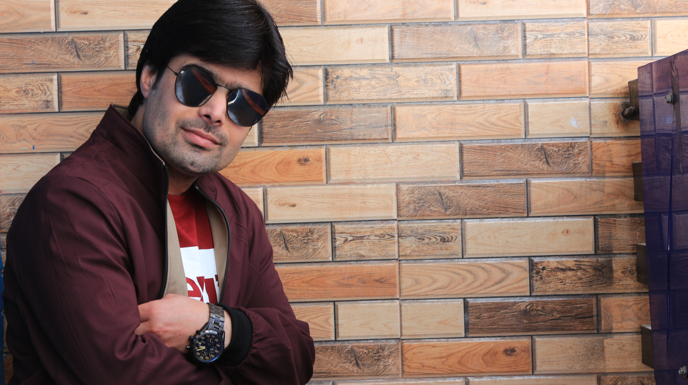
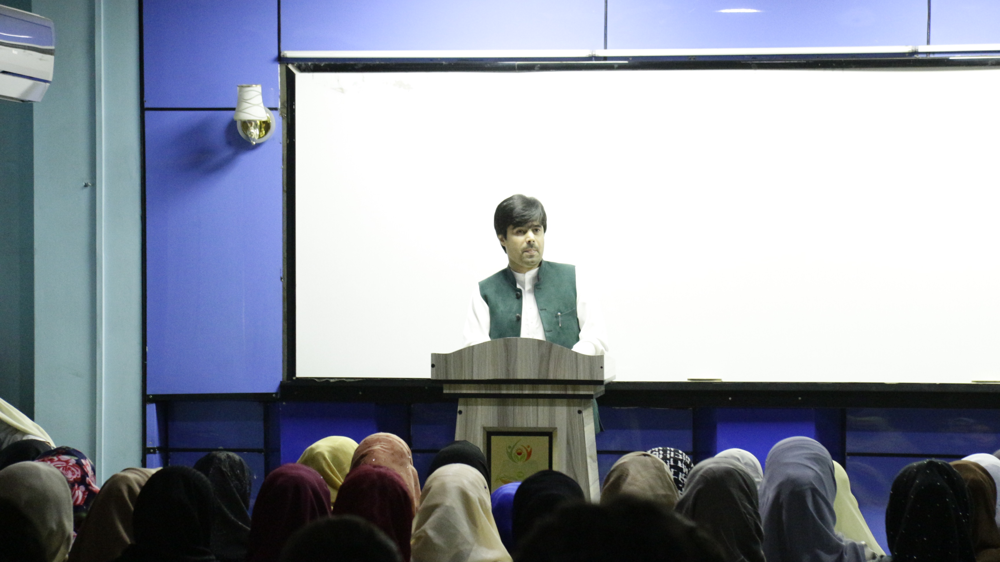
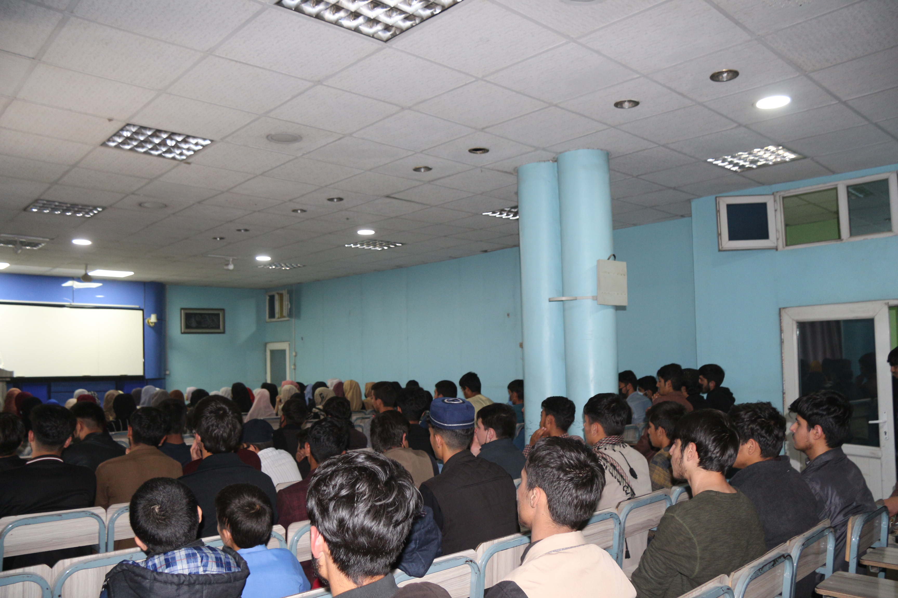
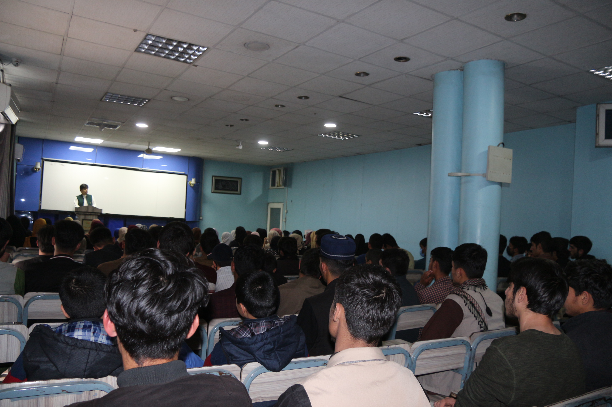

Transportation Engineering focus with field execution, QA/QC, and site coordination experience.

Transportation Engineer with a strong field-engineering foundation developed through long-term involvement in roadway, bridge, and reinforced concrete construction projects. Experienced in translating engineering drawings and specifications into safe, constructible field operations while maintaining quality and compliance.
My experience includes coordinating surveying activities, verifying alignment and grades, supporting QA/QC inspections, tracking quantities, and maintaining site documentation such as daily reports and as-builts. In addition to engineering practice, I am active as a STEM educator and technical content creator. Now based in Ottawa, I am actively preparing for P.Eng licensure and seeking opportunities with Canadian engineering and infrastructure teams.
Experienced in delivering technical lectures, academic workshops, and exam-focused training sessions for civil engineering students through in-person and large-audience formats.


